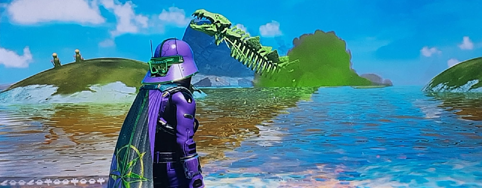

Reel in the Stars: Intergalactic Fishing Adventures
Mick Knack and Cole Slaw's
Charters and Tournaments

On the distant planet of Simon, nestled in the glow of the Skim-Milky Way, fishing is not a pastime but an adventure into the cosmic unknown. Unlike Togam's serene lakes, Simon's oceans are vast, bioluminescent expanses of liquid stardust, shimmering under the light of a sun fit for a giant. The water, if you can call it that, is a dense, iridescent fluid that hums with microscopic organisms, sustaining lifeforms that defy imagination.
My first fishing trip to Simon was aboard a sleek hover-skiff, its hull vibrating with anti-grav tech as we skimmed over the glowing waves. The locals, a species of amphibious humanoids called the Thaloryn, taught me their ancient art of "star-casting." Instead of rods and reels, they use crystalline lures charged with electromagnetic pulses, designed to attract the planet's most elusive creature: the Leviathra, a colossal space fish rumored to be as old as the stars themselves.
As we cast our lures into the radiant depths, the ocean pulsed with life. Schools of tiny, comet-like creatures darted past, their tails leaving trails of sparkling plasma. The Thaloryn guide, Kwe’vox, whispered tales of Leviathra sightings—beings so massive they could eclipse a moon. I laughed, thinking it folklore, until the skiff lurched violently.
The battle lasted hours. The Thaloryn chanted, guiding me to adjust the lure’s frequency to calm the beast. With a final, desperate heave, we hauled it aboard, its massive form barely fitting on the skiff’s deck. The Leviathra thrummed with energy, its scales warm to the touch, as if infused with starfire. Kwe’vox knelt, offering a prayer to the creature’s Spirit before releasing it back into the depths, as was their custom.
Catching a Leviathra wasn’t about conquest; it was about connection. A fleeting bond with a creature that swam through the cosmos before Travellers even dreamed of the stars. As we glided back to shore, the ocean glowed brighter, as if the Leviathra had left a piece of its light behind. On Simon, fishing is more than a sport; it’s a dance with the universe itself.
Learn how to attract cosmic fish with holographic lures.
From asteroid belts to black hole edges.
Details will appear here.